Y25 (2025) — English translation
Equipment (electrical): Photosensitive CCD ruler connected to a computer (only the program for the CCD ruler is used). Magnetic screen USB flash drive lamp
Equipment (electrical):
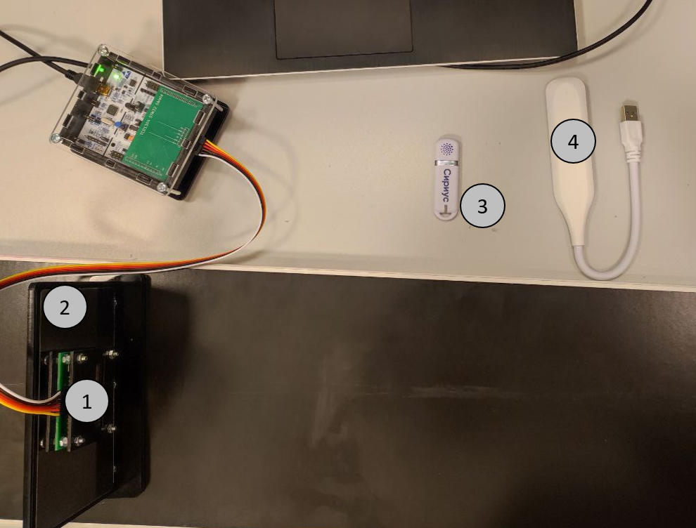
Equipment (optical): Wire power supply and cable adapter. Do not change the voltage $15~В$. Loop Continuous spectrum LED LED-CON. Three-color LED-RGB LED (colors can be changed using a key on the adapter). Three black lenses $L_1$ with optical power $+6~дптр.$ One white lens $L_2$ with optical power $+16~дптр.$ Lens $L_3$ on a rod with unknown optical power (lens $L_3$ can be mounted directly on a tripod). Diffraction grating with period $d_0=2.0~мкм$. Optical table. Stand for illuminator and cuvettes. Spacer (required for part C) Stand for lens $L_3$ and laser. Ruler Slit
Equipment (optical):
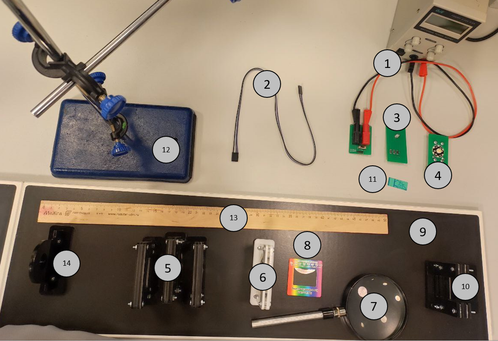
Equipment (chemical): Cuvettes with lids (10 pieces) Jars for analysis with water (2 pieces) Syringe with a 0.5 ml needle Two syringes with a 3 ml needle Lasers (red, green and blue) Batteries for lasers (6 pieces) Laser button holder Rhodamine B solution with molar concentration $c_0=200~мкМ$ Tweezers
Equipment (chemical):
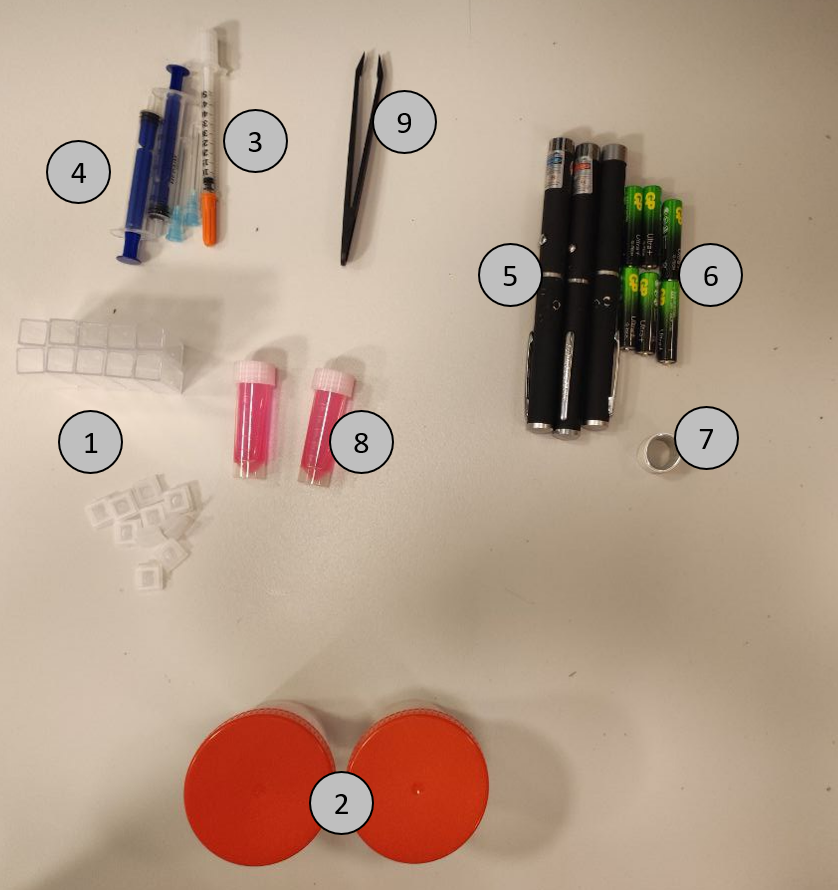
ВНИМАНИЕ. ВСЕ ЭКСПЕРИМЕНТАЛЬНЫЕ ДАННЫЕ ДОЛЖНЫ БЫТЬ СОХРАНЕНЫ НА ФЛЕШКЕ В ПАПКЕ С ВАШЕЙ ФАМИЛИЕЙ. НЕПРАВИЛЬНО СОХРАНЕННЫЕ ФАЙЛЫ НЕ ОЦЕНИВАЮТСЯ Если вы хотите сохранить какие-то дополнительные данные, то сохраните их в папке Add. Такие файлы будут игнорироваться, если к ним не будет сделано описание в работе. На флешке нельзя создавать какие-либо новые папки или удалять существующие. При сохранении файлов с помощью программы spectrometer.bat расширение .csv устанавливается автоматически. Изучение электромагнитных свойств веществ является основой современной науки, так как фотоны являются самой «дешевой» частицей, которую можно отправить взаимодействовать с изучаемым образцом. В данной задаче мы рассмотрим такие техники исследования как спектроскопия поглощения и флюоресцентная микроскопия. Свет как электромагнитная волна взаимодействует с заряженными частицами: электронами и ядрами в молекулах. С точки зрения классической механики полная энергия такой системы является параметром, определяющим (естественно, не полностью) движение системы, причём этот параметр может изменяться непрерывно. Однако с экспериментом согласуется другое, квантовое рассмотрение. В этом случае оказывается, что полная энергия системы может принимать только некоторый дискретный спектр значений. Каждой энергии соответствует некоторое квантовое состояние системы. Спектр энергий ограничен снизу, то есть существует минимально возможное значение энергии системы. Соответствующее ему состояние называется основным состоянием . Состояния с большей энергией называются возбуждёнными . Для наглядного представления энергетического спектра молекулы используют диаграмму Яблонского
Если вы хотите сохранить какие-то дополнительные данные, то сохраните их в папке Add. Такие файлы будут игнорироваться, если к ним не будет сделано описание в работе. На флешке нельзя создавать какие-либо новые папки или удалять существующие.
При сохранении файлов с помощью программы spectrometer.bat расширение .csv устанавливается автоматически.
Изучение электромагнитных свойств веществ является основой современной науки, так как фотоны являются самой «дешевой» частицей, которую можно отправить взаимодействовать с изучаемым образцом. В данной задаче мы рассмотрим такие техники исследования как спектроскопия поглощения и флюоресцентная микроскопия.
Свет как электромагнитная волна взаимодействует с заряженными частицами: электронами и ядрами в молекулах. С точки зрения классической механики полная энергия такой системы является параметром, определяющим (естественно, не полностью) движение системы, причём этот параметр может изменяться непрерывно.
Однако с экспериментом согласуется другое, квантовое рассмотрение. В этом случае оказывается, что полная энергия системы может принимать только некоторый дискретный спектр значений. Каждой энергии соответствует некоторое квантовое состояние системы. Спектр энергий ограничен снизу, то есть существует минимально возможное значение энергии системы. Соответствующее ему состояние называется основным состоянием . Состояния с большей энергией называются возбуждёнными .
Для наглядного представления энергетического спектра молекулы используют диаграмму Яблонского
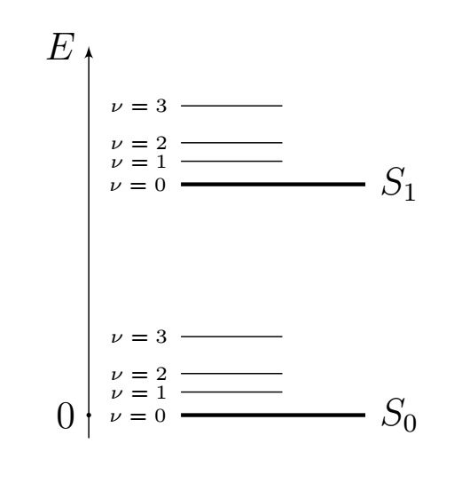
In it, the energy of the molecule is plotted vertically and the energy levels are indicated by horizontal lines. In this problem we will consider the interaction of light with Rhodamine B, which we will call $\rm RhB$. The energy of the molecule $\rm RhB$ $E$ is contributed by the energy of electron motion $E_e$ and the energy of atomic vibrations $E_a$, while the energy of atomic vibrations turns out to be significantly less than the energy of electron motion. The motion of electrons and vibrations of atoms can be considered independently. Let us denote by $S_0$ the ground state of the molecule, that is, one in which the energies of electron motion and atomic vibrations are minimal. Since the total energy can be determined up to a constant, we set the energy of this state to zero. By $S_1$ we denote the state of the molecule in which the electrons are in the first excited state, and the vibrational energy of the atoms is also minimal. The corresponding levels are highlighted in the Jablonski diagram with bold lines. Above each of the electronic levels $S_0$, $S_1$ lies a group of levels corresponding to the excited vibrational states of atoms. The number of the vibrational level will be denoted by the letter $\nu$. Summarizing all of the above, the energy of a molecule consists of the energy of electron motion and the vibration energy of atoms. As an example, the energy $E_{S_1,\nu=1}$ of the molecule state $S_1,\nu=1$ is the sum of the energy of electrons $E_{S_1}$ and the vibrational energy of atoms $E_{\nu=1}$: \[E_{S_1,\nu=1} = E_{S_1} + E_{\nu=1}\]
All photon absorption processes are possible when the molecule is in the $S_0,\nu=0$ state (left), in the $S_0,\nu=2$ state (right).
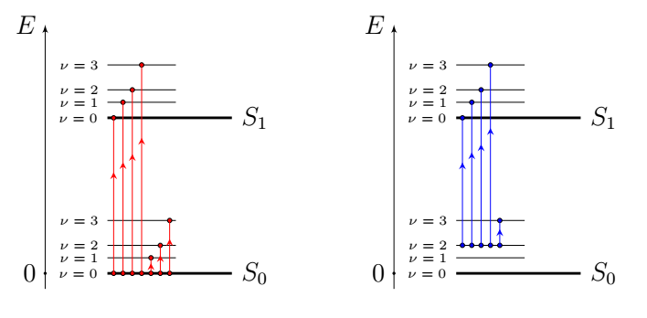
The energy of a photon with frequency $\omega$ is equal to $\hbar \omega$, where $\hbar$ is Planck’s constant. If the molecule is in the $S_0,\nu=0$ state, and the energy of the photon incident on the molecule coincides with the energy difference between a certain level and the $S_0,\nu=0$ state, then this photon can be absorbed by the molecule and excite the movement of electrons and vibrations of atoms. In the figure above, colored arrows indicate possible absorption processes for molecules in the $S_0,\nu=0$ and $S_0,\nu=2$ states. According to the presented model of the interaction of light with matter, it interacts with photons only when the expression $$\hbar \omega = E_1 - E_2 \tag{1}$$ выполняется строго и абсолютно точно. В действительности существует множество факторов связанных с более тонким рассмотрением механизма взаимодействия света с веществом, которые допускают поглощение фотонов, для которых $(1)$ выполнено не в точности и график зависимости вероятности $p(\omega)$ поглощения фотона с частотой $\omega$ представляет из себя набор пиков конечной ширины. Максимумы этих пиков соответствуют выражению $(1)$. Ширина пиков характеризуется параметром $\rm FWHM$ – полная ширина на полувысоте максимума.
Энергия фотона с частотой $\omega$ равна $\hbar \omega$, где $\hbar$ – постоянная Планка. Если молекула находится в состоянии $S_0,\nu=0$, и энергия налетающего на молекулу фотона совпадает с разницей энергий между некоторым уровнем и состоянием $S_0,\nu=0$, то этот фотон может быть поглощён молекулой и возбудить движение электронов и колебания атомов. На рисунке выше цветными стрелками указаны возможные процессы поглощения для молекул, находящихся в состояниях $S_0,\nu=0$ и $S_ 0,\nu=2$. Согласно представленной модели взаимодействия света с веществом, оно взаимодействует с фотонами только когда выражение $$\hbar \omega = E_1 - E_2 \tag{1}$$ выполняется строго и абсолютно точно. В действительности существует множество факторов связанных с более тонким рассмотрением механизма взаимодействия света с веществом, которые допускают поглощение фотонов, для которых $(1)$ выполнено не в точности и график зависимости вероятности $p(\omega)$ поглощения фотона с частотой $\omega$ представляет из себя набор пиков конечной ширины. Максимумы этих пиков соответствуют выражению $(1)$. Ширина пиков характеризуется параметром $\rm FWHM$ – полная ширина на полувысоте максимума.
Согласно представленной модели взаимодействия света с веществом, оно взаимодействует с фотонами только когда выражение
$$\hbar \omega = E_1 - E_2 \tag{1}$$
выполняется строго и абсолютно точно.
В действительности существует множество факторов связанных с более тонким рассмотрением механизма взаимодействия света с веществом, которые допускают поглощение фотонов, для которых $(1)$ выполнено не в точности и график зависимости вероятности $p(\omega)$ поглощения фотона с частотой $\omega$ представляет из себя набор пиков конечной ширины. Максимумы этих пиков соответствуют выражению $(1)$. Ширина пиков характеризуется параметром $\rm FWHM$ – full width at half-maximum.
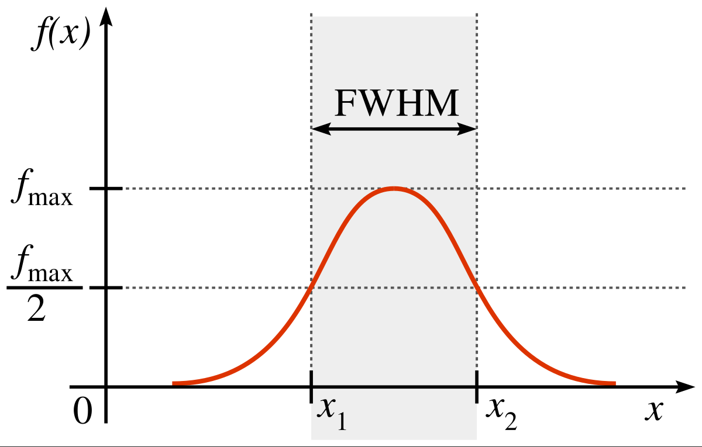
An example of the dependence of spectrum broadening on temperature. Y Wang et al. 2021
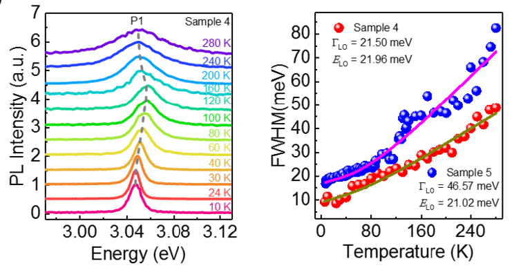
States $S_{2,3,\dots}$, etc. will not be considered within the framework of the problem. It is convenient to measure the energies of interaction and motion in atoms in electron volts (eV). $1~эВ$ is equal to the energy that an electron acquires by moving between two points in space with a potential difference $1~В$. During the task, concentrations are measured in units of $М$, $М = 1~моль/л$.
It is convenient to measure the energies of interaction and motion in atoms in electron volts (eV). $1~эВ$ is equal to the energy that an electron acquires by moving between two points in space with a potential difference $1~В$.
During the task, concentrations are measured in units of $М$, $М = 1~моль/л$.
$\hbar, ~Дж \cdot с$. $c,~м/с$ $e,~Кл$ $N_A,~1/моль$ $1.05 \cdot 10^{-34}$ $3.00 \cdot 10^8$ $1.60 \cdot 10^{-19}$ $6.02 \cdot 10^{23}$
To better understand the described theory, consider a perylene molecule that is not involved in this experiment. The figure below shows the dependence of the probability of absorption $p$ of a photon on its energy $\hbar \omega$ when it enters a perylene molecule in the ground state. The graph shows broadened absorption lines corresponding to the transitions indicated on the graph. The probabilities of different transitions differ, resulting in different heights of absorption peaks.
Absorption spectrum of the ground state of perylene in the visible wavelength range. Berlman, 1971
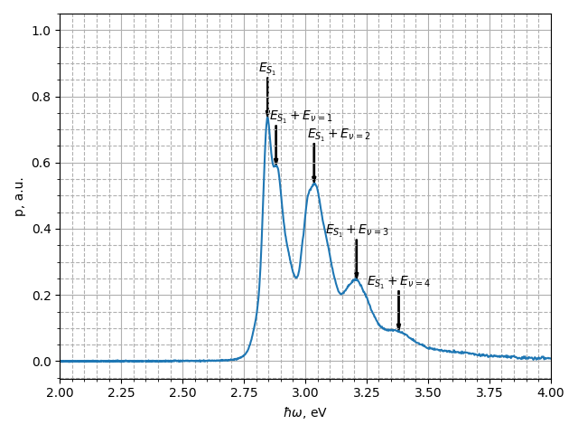
The energy of light in the optical range is almost always significantly greater than the energy of the vibrational states of the molecule. Therefore, to study purely vibrational states, absorption spectra are measured in the infrared wavelength range.
Absorption spectrum of the ground state of perylene in the infrared wavelength range. E. Maltseva et al. 2016
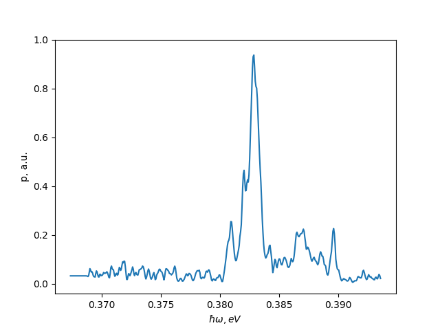
We will use the following optical scheme to measure the spectrum of light coming from the source. The slit $S$ allows you to separate the positioning of the image on the CCD ruler and the positioning of the source, since the CCD ruler shows the spectrum of light that appears in the slit.
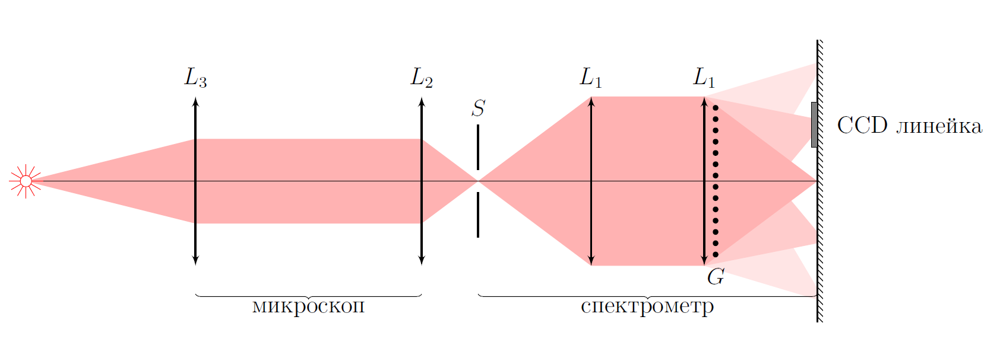
Let's find the optimal position of the CCD ruler in our optical design. For this, we will use RGB-LED as a light source with known spectral characteristics. The wavelength $\lambda_\mathrm{max}$, which corresponds to the maximum intensity of light emitted by RGB-LED in each operating mode, is indicated in the table below
Color Blue Green Red $\lambda_\mathrm{max},~нм$ $460$ $520$ $620$
The RGB-LED should be positioned so that the cable is connected to its bottom.
After final adjustment of the position of all lenses, measure the emission spectrum $I(\lambda)$ of each of the LEDs. Before any measurement, check that the source image is focused on the slit (the source can be moved). Do not move the lenses and slit until the end of part A, otherwise you will have to do this step again!
Save the results of direct measurements as files “R.csv”, “G.csv”, “B.csv” in the “B3” folder on a flash drive.
A CCD ruler is a sequence of pixels that are located on the “ruler” divisions with a step $\Delta x$.
The CCD ruler is a sequence of pixels that are located on the “ruler” divisions with a step of $\Delta x$.
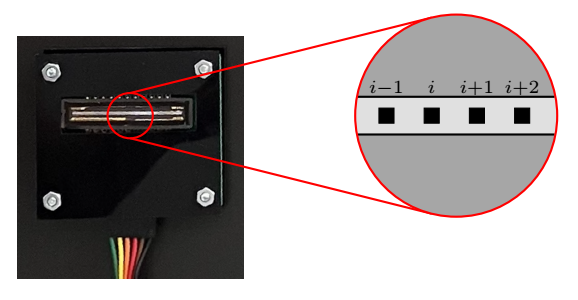
In the spectrometer software, you can apply a linear transformation to the horizontal axis for clarity. When saving the file, only the pixel number will be saved, so for any spectra, indicate the adjustment that corresponds to them. Record all adjustments used in the answer sheet table of paragraph B5 and refer to them using their names.–
Now the spectral microscope is ready for use
When rhodamine is added to water, its refractive index changes slightly, so you can study the passage of light through rhodamine solutions simply by changing cuvettes on a tripod.
Save the results of direct measurements as files “T-$c$.csv” in the folder “B10”, where $c$ is the concentration of rhodamine in $мкМ$. For each file, specify sensitivity.
Note: The source spectrum and background may change if you take measurements long enough, so only make test measurements as you prepare solutions. Then take final measurements with pure water ($c=0~мкМ$) and all 7 prepared solutions.
To quantitatively describe the absorption of light in a medium, the molecular absorption cross section $\sigma(\lambda)$ is introduced. The absorption cross section has the dimension of area. If a photon hits the absorption cross section, it is absorbed, and if it doesn’t hit, it flies past.
To quantitatively describe the absorption of light in a medium, the molecular absorption cross section $\sigma(\lambda)$ is introduced. The absorption cross section has the dimension of area. If a photon hits the absorption cross section, it is absorbed, and if it doesn’t hit, it flies past.
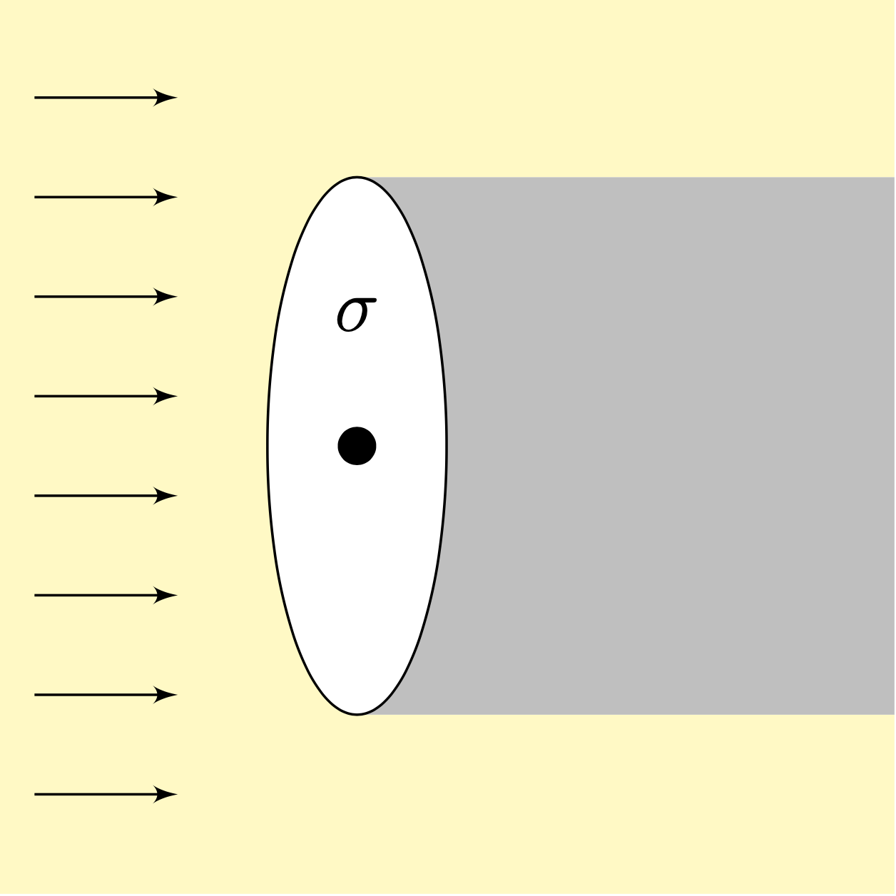
Spectrally complex, LED-CON light can be thought of as a superposition of independent monochromatic waves, each of which interacts with the solution with its own $\sigma(\lambda)$.
If the solution $\rm RhB$ has a high concentration, some of the molecules stick together into dimers $\rm RhB_2$, which also interact with light. It is convenient to describe such a case as follows: in a solution there are particles of two types that transform into each other according to the following reaction: \[ \rm 2RhB \rightleftharpoons RhB_2 \] In this case, the concentration $c$ that you used in point A12 is not the true concentration of rhodamine monomers $\rm RhB$. The concentration $c$ corresponds to the concentration of monomers $\rm RhB$ in the case if all dimers in a real solution decomposed into monomers. The ratio $c_\text{м}/c$, where $c_\text{м}$ is the real concentration of monomers in the solution, depends nonlinearly on $c$.
\[ \rm 2RhB \rightleftharpoons RhB_2 \]
In this case, the concentration $c$ you used in step A12 is not the true concentration of rhodamine monomers $\rm RhB$. The concentration $c$ corresponds to the concentration of monomers $\rm RhB$ in the case if all dimers in a real solution decomposed into monomers.
The ratio $c_\text{м}/c$, where $c_\text{м}$ is the real concentration of monomers in the solution, nonlinearly depends on $c$.
Below is the absorption spectrum of photons of infrared light from rhodamine, that is, a graph of the dependence of the probability of absorption of a photon on its energy.
Absorption spectrum of the ground state of rhodamine in the infrared wavelength range. Zhou J. et al. 2019.
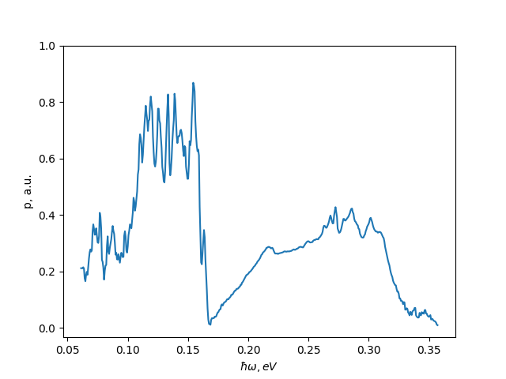
Along with the process of absorption of light by a substance, the emission of light is possible if the molecule is in an excited state. In this case, again $\Delta E = \hbar \omega$, only now $\omega$ is the frequency of the emitted photon. This process is called spontaneous emission.
All possible processes of photon emission when the molecule is in the $S_1,\nu=0$ state (left), in the $S_1,\nu=1$ state (right).
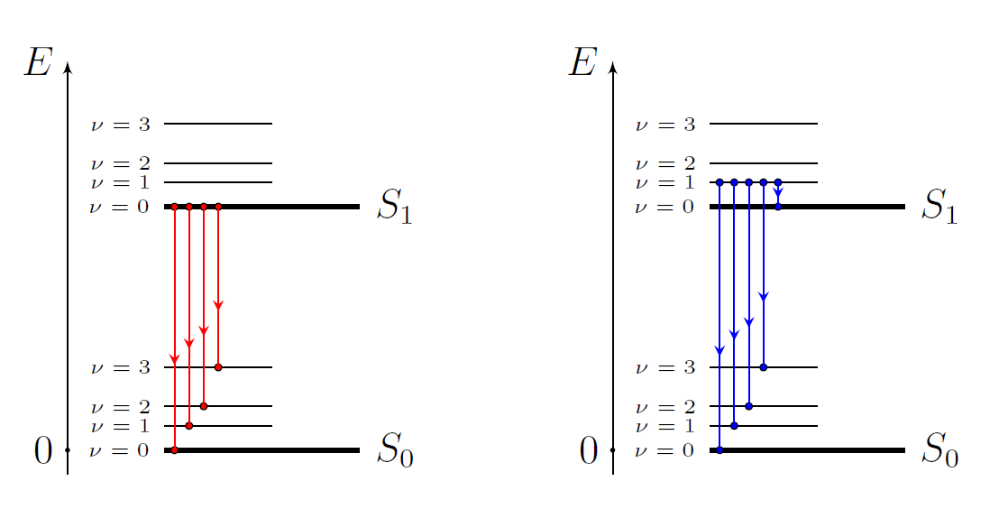
In fact, the emission of photons from states $S_{1,\nu \neq 0}$ is not observed in the experiment. This is explained by non-radiative relaxation, associated with the generation of mechanical waves with almost optical frequency (phonons) in the liquid surrounding the molecule. The simplest way to transfer a molecule to the excited state $S_{1,\nu}$ is to illuminate it with laser radiation with photon energy $\hbar \omega_0 > E_{S_1}$. In this case, a process occurs consisting of three stages: Absorption of an exciting photon with energy $\hbar \omega_0 > E_{S_1}$. Non-radiative relaxation from levels $E_{S_1,\nu \neq 0}$ to $E_{S_1,0}$. Emission of a photon with energy $\hbar \omega < E_{S_1}$. During emission, the photon does not necessarily reach the $E_{S_0,\nu=0}$ level. When entering vibrational sublevels, the molecule relaxes nonradiatively to the ground state according to the same mechanism as described above. The entire process described is called fluorescence. Considering the processes of fluorescence and optical absorption together allows us to obtain a much more complete picture of the Jablonski diagram of a molecule.
In fact, the emission of photons from the $S_{1,\nu \neq 0}$ states is not observed in the experiment. This is explained by non-radiative relaxation, associated with the generation of mechanical waves with almost optical frequency (phonons) in the liquid surrounding the molecule. The simplest way to transfer a molecule to the excited state $S_{1,\nu}$ is to illuminate it with laser radiation with photon energy $\hbar \omega_0 > E_{S_1}$. In this case, a process occurs consisting of three stages: Absorption of an exciting photon with energy $\hbar \omega_0 > E_{S_1}$. Non-radiative relaxation from levels $E_{S_1,\nu \neq 0}$ to $E_{S_1,0}$. Emission of a photon with energy $\hbar \omega < E_{S_1}$. During emission, the photon does not necessarily reach the $E_{S_0,\nu=0}$ level. When entering vibrational sublevels, the molecule relaxes nonradiatively to the ground state according to the same mechanism as described above. The entire process described is called fluorescence. Considering the processes of fluorescence and optical absorption together allows us to obtain a much more complete picture of the Jablonski diagram of a molecule.
The simplest way to transfer a molecule to the excited state $S_{1,\nu}$ is to illuminate it with laser radiation with the energy of photons $\hbar \omega_0 > E_{S_1}$. In this case, a process consists of three stages:
During emission, the photon does not necessarily reach the $E_{S_0,\nu=0}$ level. When entering vibrational sublevels, the molecule relaxes nonradiatively to the ground state according to the same mechanism as described above.
The entire process described is called fluorescence. Considering the processes of fluorescence and optical absorption together allows us to obtain a much more complete picture of the Jablonski diagram of a molecule.
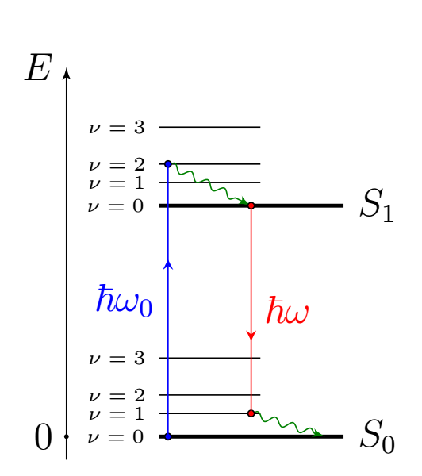
The interpretation of the perylene absorption peaks indicated at the very beginning of Part A can be proven based on a comparison of the absorption and emission spectra
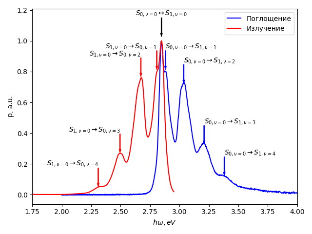
To excite fluorescence we will use laser beams. Their wavelengths are: Color Blue Green Red $\lambda, ~нм$ 405 532 650
To excite fluorescence we will use laser beams. Their wavelengths:
Next, you may need a spacer - a small plastic plate. It is designed to adjust the installation height of the illuminator in the holder. You can install it in the light holder as shown in the figure, and then install the required light in the same guides.
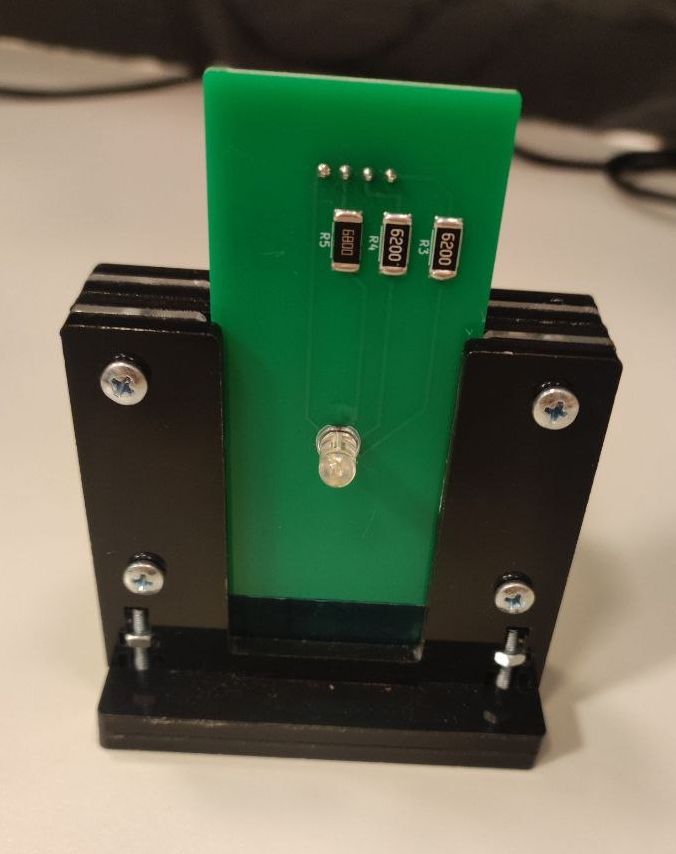
The highest absorption and emission in perylene corresponds to the transition between states with $\nu=0$, however, in most fluorescent molecules this transition occurs with a low probability, and the maximum absorption corresponds to the transition with $S_{0,\nu=0} \to S_{1,\nu=1}$. In this case, the maximum emission corresponds to the transition $S_{1,\nu=0} \to S_{0,\nu=0}$. This leads to the fact that the absorption and emission maxima do not coincide and are shifted relative to each other. This shift is called the Stokes shift. The presence of a Stokes shift in rhodamine shows that the Jablonski diagram we obtained in the previous part may be slightly incorrect, since we may have incorrectly identified the transitions.
The presence of a Stokes shift in rhodamine shows that the Jablonski diagram we obtained in the previous part may be slightly incorrect, since we may have incorrectly identified the transitions.
In this part, we modify the optical design to collect greater light intensity on the CCD line. When changing the circuit, you should not change the position of the lenses inside the spectrometer.
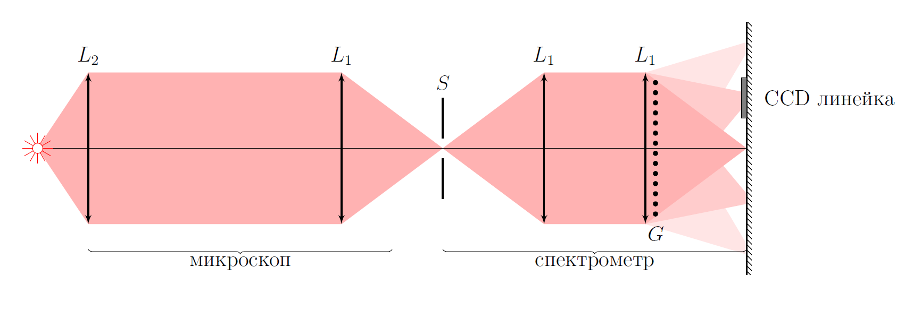
Adjust the position of lenses $L_2$ and $L_1$ using the inverted RGB-LED.
Save the results of direct measurements as files “R.csv”, “G.csv”, “B.csv” in the “C2” folder on a flash drive.
For further measurements, use only the violet and green lasers, which shine vertically into the open cell. When monochromatic radiation with sufficient photon energy enters a fluorescent medium, it is gradually absorbed as it passes through the solution and transfers the molecules to an excited state. In the excited state $S_{1,\nu=0}$ of a rhodamine molecule there is an average time $\tau_0\approx 1.2~нс$, which is called the lifetime of the excited state.
Let us obtain the fluorescence emission spectra of the spectrometer microscope. To do this, you need to VERY carefully select the position of the focused vertical laser beam so that fluorescence occurs at the focus of the objective lens $L_2$.
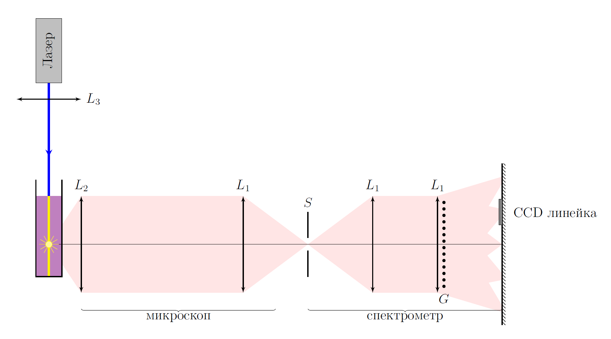
Draw a qualitative graph of the fluorescence spectrum of $I_{405}(\lambda)$. Indicate the wavelength $\lambda_{405,\mathrm{max}}$ at which fluorescence emission is maximum.
Save the results of direct measurements as a file “405.csv” in the “C6” folder on a flash drive.
Do not change any parts of the installation other than the cuvettes during the following steps.
To compare the absorption spectra measured in part A and in part B, we compare two dependences: Normalized absorption spectrum: $A(E) = \sigma_м(E)/\sigma_м(E_\mathrm{max})$, where $E_\mathrm{max}$ is the energy of photons that are most strongly absorbed by rhodamine Normalized fluorescence spectrum: $F(E) = I_{405}(E)/I_{405}(E_{405,\mathrm{max}})$, where $E_{405,\mathrm{max}}$ is the energy of photons, the emission of which is strongest during fluorescence.
To compare the absorption spectra measured in part A and part B, let us compare two dependences
Source: https://pho.rs/p/4541